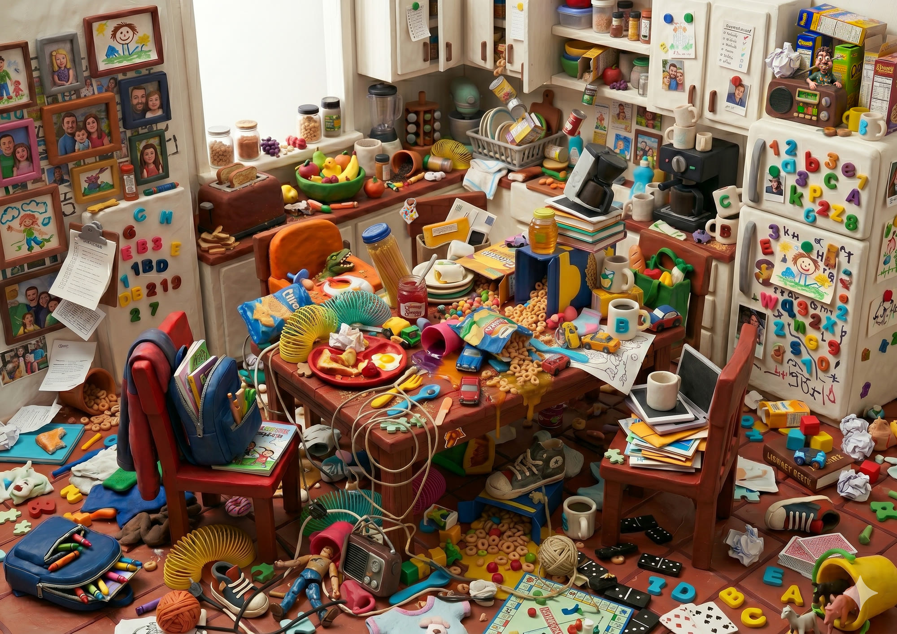
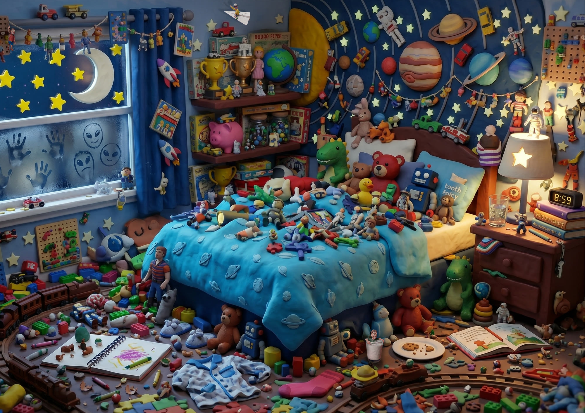


Pedro Benadiba · 2026 · Inteligencia Artificial Generativa · Diseño Editorial
Descripción del Proyecto
“Amigos Tipines” es un libro de búsqueda visual —del género Search & Find, popularizado por títulos como ¿Dónde está Wally?— desarrollado íntegramente a partir de generación de contenido con inteligencia artificial. El proyecto explora el uso de herramientas de IA como motor creativo principal, aplicado al diseño editorial infantil.
Desde la creación de los personajes y la construcción de los escenarios hasta la narrativa, la paleta cromática y la estética visual, cada decisión fue tomada en diálogo constante con distintas IAs, iterando y refinando los resultados hasta lograr un producto cohesivo, original y con identidad propia. El desafío central fue demostrar que la IA no solo puede ejecutar instrucciones técnicas, sino participar activamente en la construcción de un universo creativo complejo, con personajes consistentes, escenarios densos y una historia con principio y final.
La Idea
El libro sigue la rutina de un día completo en la vida de un niño, acompañado por sus tres juguetes favoritos: Peppi, Matti y Gatti, tres muñequitos de plastilina que él mismo construyó con sus manos. Cada uno tiene una personalidad bien definida y lo divertido del libro es precisamente eso: encontrarlos escondidos en cada escenario haciendo cosas completamente típicas de su carácter.
A lo largo de distintas situaciones cotidianas de la vida de un niño, el lector debe buscarlos a ellos y a los objetos que los delatan, sabiendo que cada uno va a estar haciendo exactamente lo que mejor sabe hacer. El recorrido culmina en los sueños del niño, donde cada tipín cumple su máximo deseo. Pero como todo buen juego tiene un final, al despertar el niño los toma entre sus manos, los amasa con cariño y los vuelve a convertir en una simple bola de plastilina —dándole cierre a la narrativa de esta historia.
Integrantes
Equipo
Propósito
IA Generativa y Diseño — Lic. en Diseño — UTDT
Herramientas Utilizadas


Parte II
Amigos Tipines nació como un libro de búsqueda — un universo donde tres personajes de plastilina se escondían en el caos de la vida cotidiana de un niño y el lector tenía que encontrarlos. Un concepto claro, con una identidad visual y narrativa muy definida.
Esta segunda etapa del proyecto abre puertas a la expansión del universo de los Amigos Tipines. Con tres personalidades únicas, su identidad sumamente reconocible y un concepto tan consistente, esta historia tiene todo lo que necesita para adaptarse a cualquier soporte.
El salto del libro al audiovisual no solo amplió el alcance del proyecto. Los mismos tipines que antes se escondían en escenas cotidianas ahora toman vida propia y recorren el mundo para protagonizar situaciones distintas. Los personajes y la narrativa nos demuestran el potencial que tiene este universo para lograr expandirse y adaptarse a cualquier otra área del diseño y la comunicación.
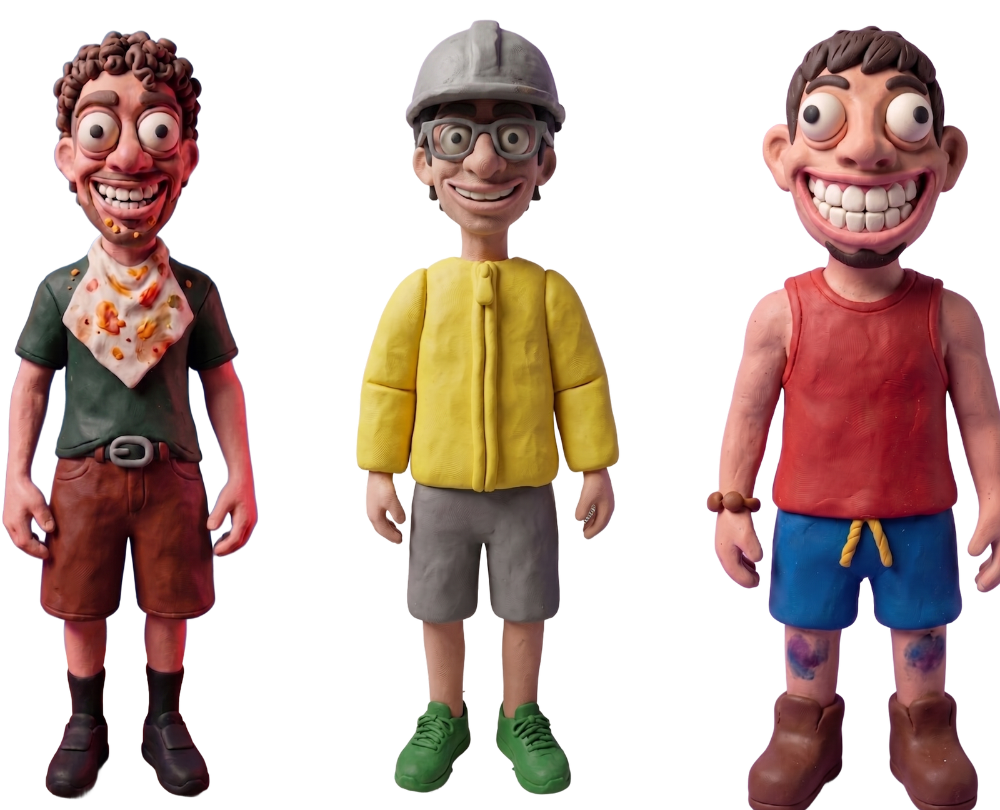
Peppi, Matti y Gatti dejan la vida cotidiana del niño que los creó y salen al mundo por su cuenta.
TippinesTV es una serie de sketches de comedia sin narrativa lineal, donde cada escena tiene su propio universo visual con los mismos protagonistas, el mismo tono y la misma lógica de caracterización de personajes.
Este corto presenta cuatro sketches que refieren a universos distintos: cinematográficos, geográficos, culturales y de aventura; demostrando una vez más la versatilidad con la que se puede adaptar la serie. Cuatro sketches, cuatro mundos distintos, que conviven siempre dentro de un mismo universo conceptual.
El videojuego es la continuación directa de la última escena del sketch. En ella, los tipines viajan al futuro y descubren que el Jefe Soda —un villano poderoso y despiadado— domina el mundo. Para salvar el futuro, deben viajar al presente, llegar a la Casa Rosada y derrotarlo antes de que sea demasiado tarde.
El juego presenta diferentes situaciones según el resultado: si lográs derrotar al Jefe Soda, los tipines salvan a la Nación Argentina y se abren nuevas posibilidades —incluyendo convertirte en presidente. Una extensión lúdica del universo que mantiene el humor, los personajes y el espíritu caótico de TippinesTV.
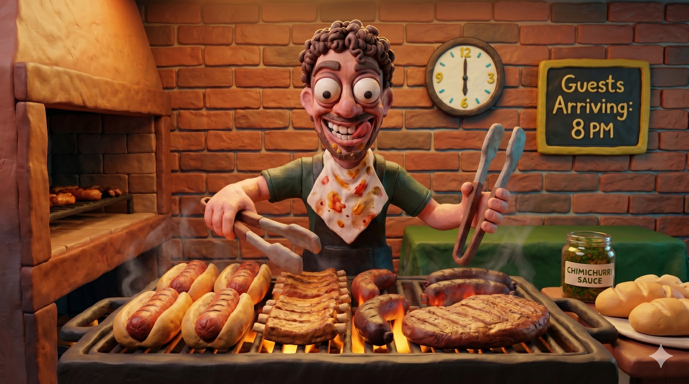
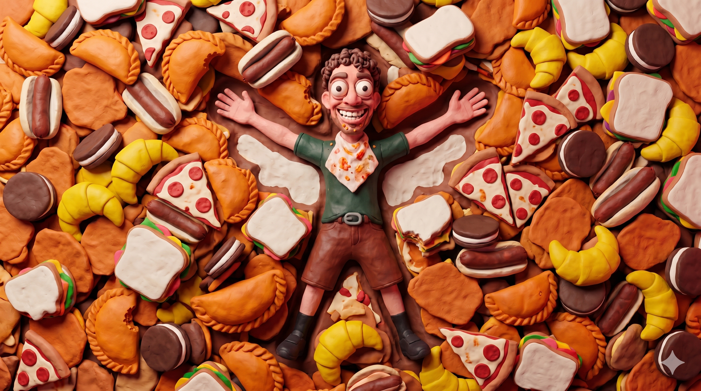
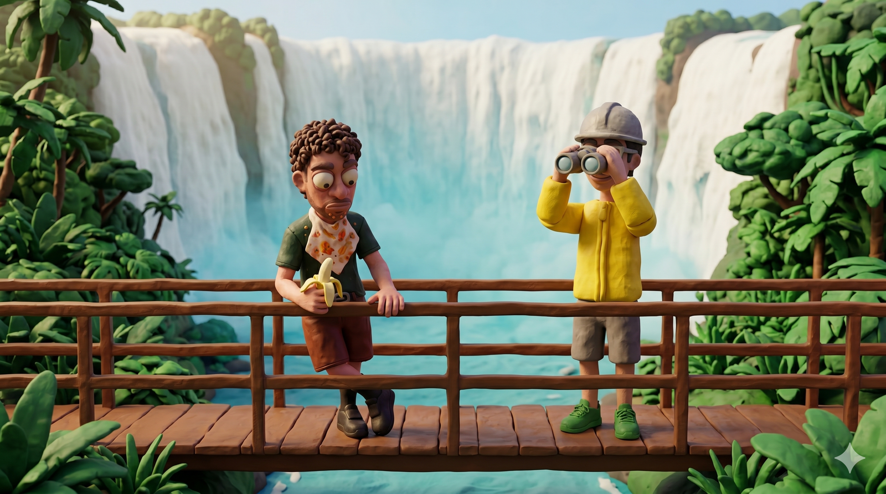
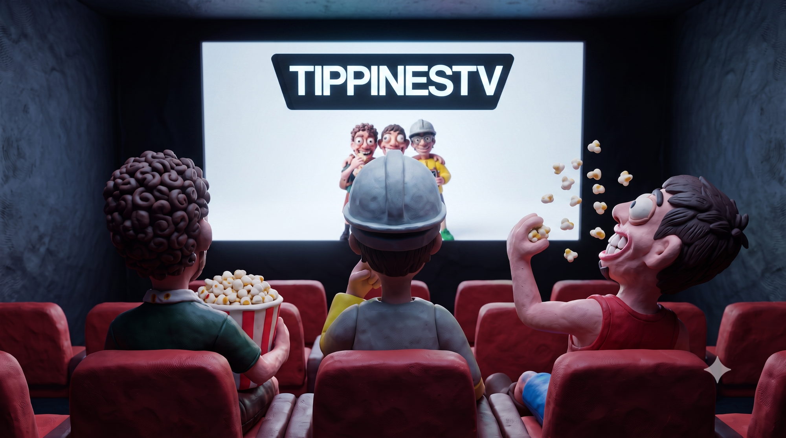
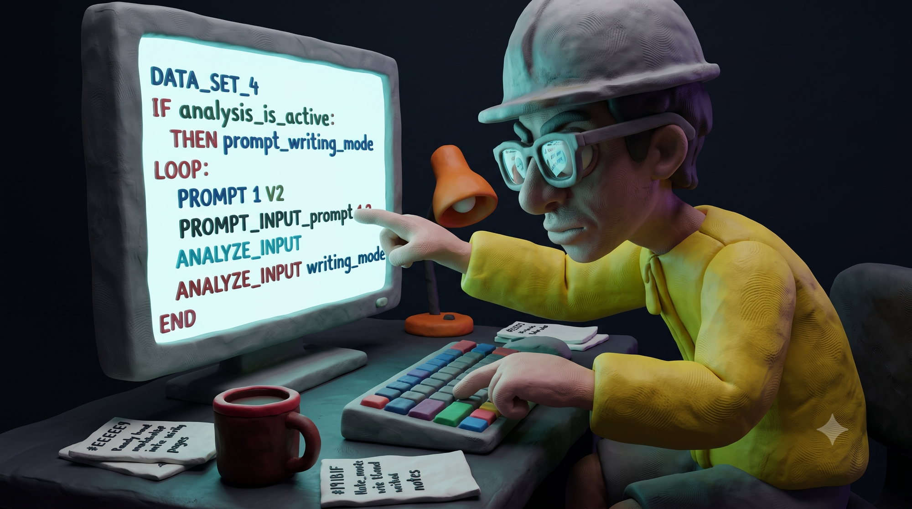
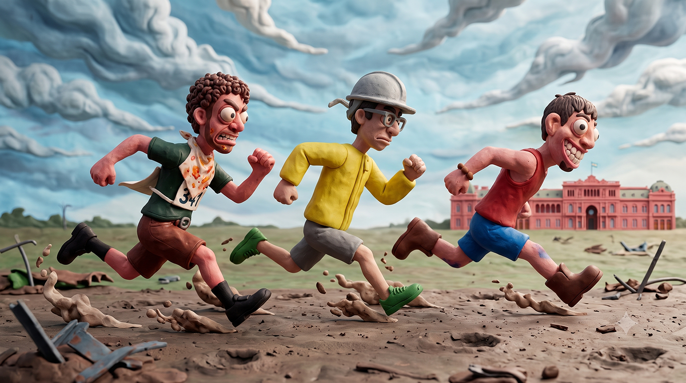
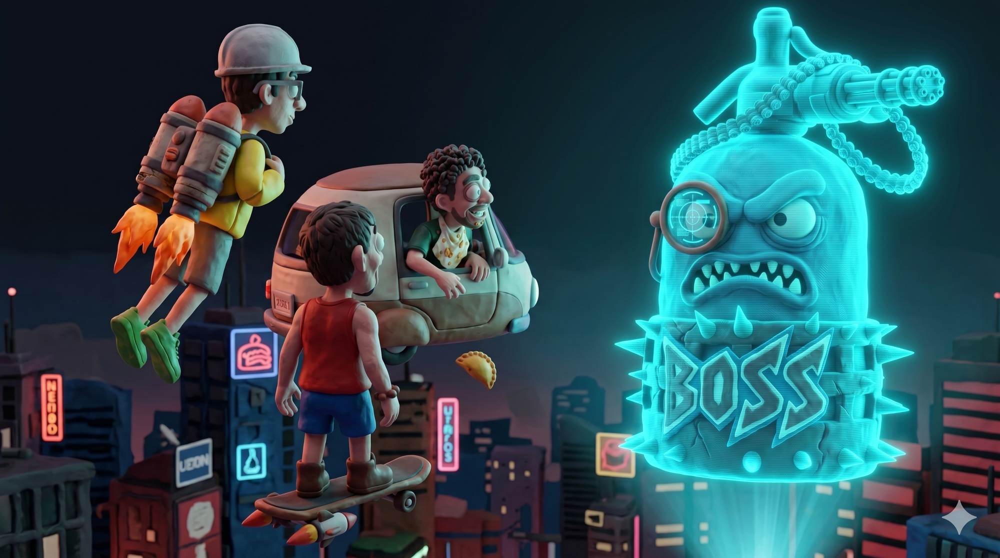
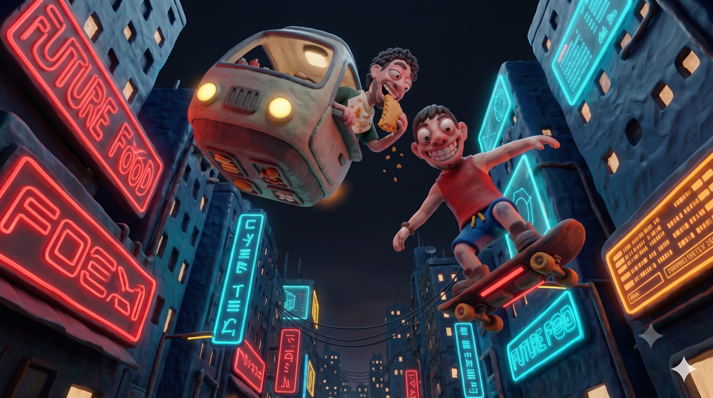
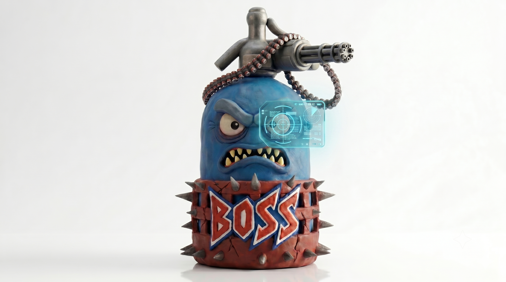